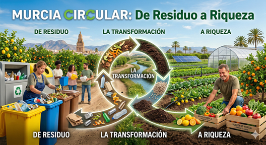

🌍 Bienvenidos a: "Murcia Circular - de Residuo a Riqueza"
Hasta ahora hemos estudiado cómo el modelo económico tradicional está agotando nuestro planeta y cómo la economía circular puede salvarnos. Hemos visto la teoría, las leyes europeas y los grandes desastres ecológicos de nuestra región, pero... la teoría, si no se aplica, no sirve para nada.
A partir de este momento, dejáis de ser alumnos sentados en un pupitre y os convertís en emprendedores. Arranca nuestro gran proyecto final: "Murcia Circular: de Residuo a Riqueza". Vuestra misión será buscar un problema real en nuestra región y diseñar una idea de negocio que lo solucione ganando dinero de forma ética y sostenible.
